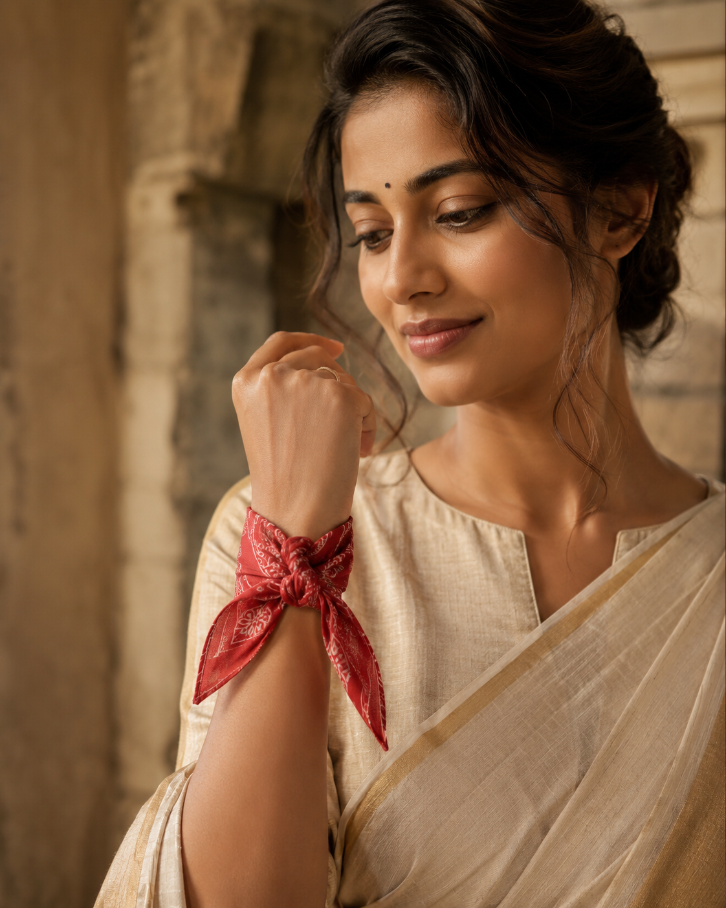
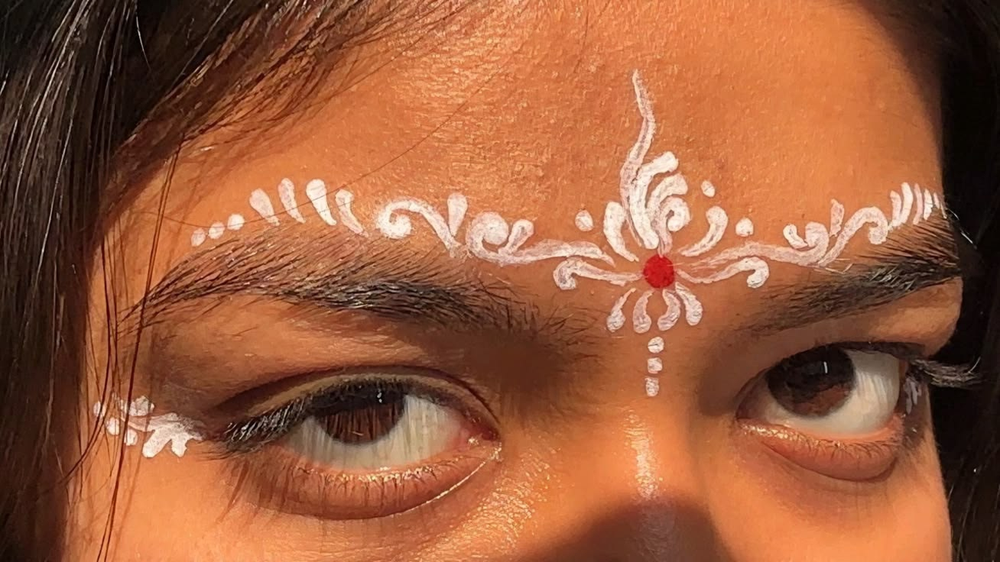
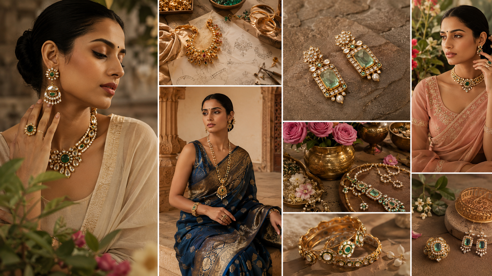
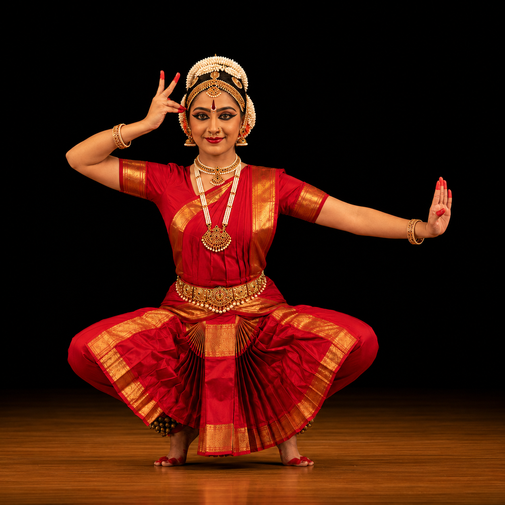

Workshop
Workshop di Stampa con Blocchi
Stampa tessile collaborativa dove i visitatori stampano da soli, sperimentano la pressione del blocco e contribuiscono a una superficie tessile condivisa.

Un programma mirato di partecipazione artigianale, cultura materiale, suono, fragranza, conoscenza botanica e riflessione spaziale.
Stampa tessile collaborativa dove i visitatori stampano da soli, sperimentano la pressione del blocco e contribuiscono a una superficie tessile condivisa.
Creazione dal vivo con argilla come narrazione attraverso artigianato, terra, mano, forma e tecnica ereditata.
Esplorazione delle lingue indiane con partecipazione dei visitatori attraverso scrittura, stencil e creazione di segni guidata.
Esplorazione contemporanea del drappeggio che tratta sei metri di tessuto come design, identità, scultura e movimento personale.

Un'esperienza di stile sostenibile che utilizza il riutilizzo tessile per la sperimentazione della moda e l'espressione personale.
Un'installazione murale collettiva dove ogni visitatore contribuisce attraverso il posizionamento di adesivi, più una competizione pubblica di arte con la sabbia Rangoli aperta a tutte le età.

Stazione di bellezza interattiva con bindi in varie forme, colori e design, più piccoli motivi dipinti a mano intorno agli occhi e alla fronte ispirati all'hennè e all'arte indiana tradizionale.

Le spezie vengono presentate attraverso il patrimonio agricolo, il colore, la texture e il significato nel commercio globale.

Ingredienti materiali, artigianalità, memoria e narrazione culturale attraverso la storia della fragranza.
Tradizioni di bellezza e benessere presentate attraverso l'esplorazione degli ingredienti e il patrimonio materiale.

Artigianalità della costruzione di strumenti, risonanza, esplorazione del ritmo tattile, tradizioni performative e interazione con i visitatori.

Una collezione curata di gioielleria tradizionale e contemporanea — jhumkas, bracciali, cavigliere, anelli al naso e collane stratificate ispirate a diverse regioni dell'India.

Il fulcro dell'evento. Si apre con una cerimonia formale con il Console Generale dell'India e un rappresentante del Comune di Milano.
Seguono danza classica Kathak e Bharatanatyam, una troupe professionale di medley Bollywood e un ensemble live Sitar & musica fusion.
Console Generale dell'India e rappresentante del Comune di Milano.
Performance di danza classica indiana.
Performance Bollywood contemporanea professionale.
Performance musicale dal vivo.
Un'area in stile street food con bancarelle regionali del Nord, Sud, Est e Ovest dell'India. Un dialogo vivo tra il patrimonio culinario indiano e la cultura gastronomica milanese.
Include un angolo Masala Chai e dolci tradizionali indiani. Tutti gli operatori dispongono di permessi alimentari validi e in tutta la manifestazione è richiesto l'uso di imballaggi ecologici.
«OM» è trattato come la forma dell'universo — un ciclo continuo di creazione, esistenza e ritorno.
Ispirata alle antiche incisioni templari dove la vita emerge all'interno di forme di suono sacro, l'installazione riflette l'idea dell'origine custodita all'interno del simbolo stesso.
Il cordone ombelicale diventa il filo visivo della vita, collegando inizio e divenire in un flusso ininterrotto.
Lo stand trasforma questa idea in un'esperienza immersiva in cui il corpo attraversa cicli di nascita, crescita e ritorno.